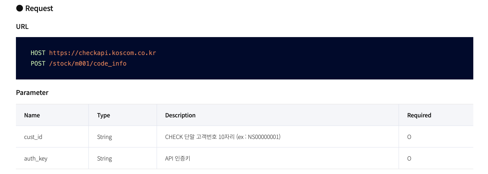
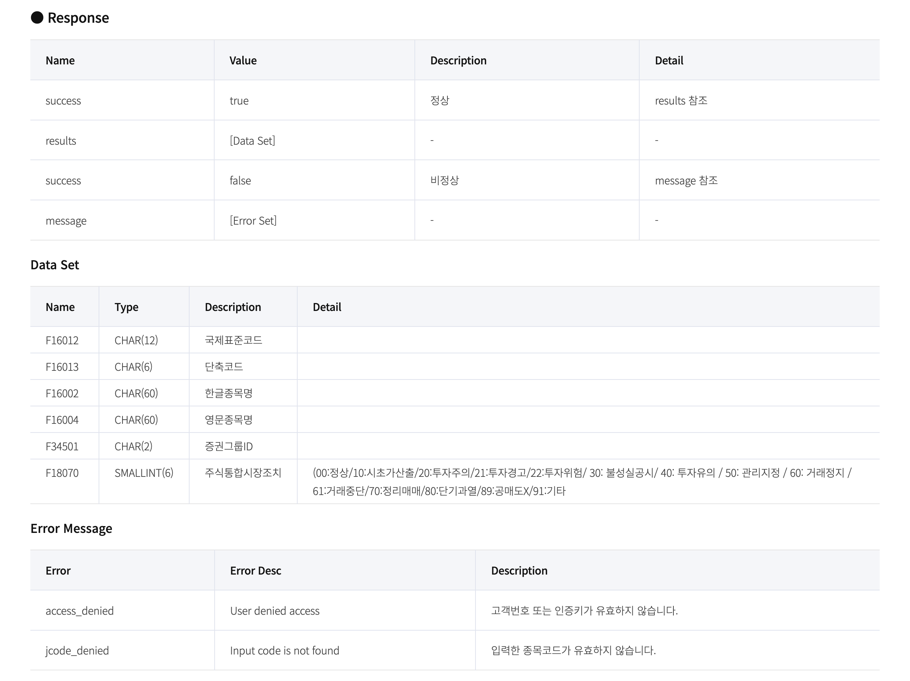

- 1
- CHECK-API 아이디 값을 문자열로 저장
- 2
- CHECK-API 인증키 값을 문자열로 저장
CHECK-API 사용법 1
CHECK-API 사용법
CHECK-API 사용법 1
본 글에서는 파이썬 언어로 CHECK-API를 호출하고 사용하는 방법을 설명합니다.
준비사항
여기에서는 컴퓨터에 이미 파이썬 배포판과 주피터랩이 설치되어 있다고 가정합니다.
만약 파이썬 배포판이 설치되어 있지 않은 경우에는 다음 블로그 글을 참고하여 설치해 주세요.
파이썬 패키지의 설치 및 관리 방법에 대해서는 다음 블로그 글을 참고해 주세요.
주피터랩이 설치되어 있지 않은 경우에는 다음 블로그 글을 참고하여 설치해 주세요.
본 설명글은 주피터랩에서 노트북으로 진행합니다.
requests 패키지 설치
파이썬으로 CHECK-API를 호출하여 사용하기 위해서는 requests 파이썬 패키지가 필요합니다. requests 패키지는 명령 프롬프트에서 다음과 같이 pip 명령으로 설치할 수 있습니다.
CHECK-API 아이디 및 인증키 확인
CHECK-API를 호출하기 위해서는 CHECK-API 아이디와 인증키가 필요합니다. CHECK-API 서비스를 신청한 고객은 CHECK 단말기에서 아이디와 인증키를 확인할 수 있습니다. 자세한 방법은 CHECK-API 공식 홈페이지를 참고하시면 됩니다.
본 설명글에서는 확인한 아이디 및 인증키를 다음과 같이 변수에 넣어 사용합니다. 본 예제 코드는 파이썬 코드로 아이디 및 인증키의 값은 가상의 코드입니다. 실제 값은 사용자마다 다릅니다.
코드 셀 1
이 코드를 주피터랩에서 실행합니다.
이 코드를 주피터랩에서 실행합니다.
사용하고자 하는 API의 명세 확인
우선 CHECK-API 공식 홈페이지에서 사용하고자 하는 API의 명세(specification)를 확인합니다. API 명세는 다음과 같은 사항으로 구성되어 있습니다.
- 호출 명세 (Request)
- 호출 주소 (URL)
- 호스트 주소 (HOST URL)
- API 주소 (API URL)
- 인수 (Parameter)
- 호출 주소 (URL)
- 결과 명세 (Response)
- 호출 결과
- 데이터 필드 (Data Set)
- 오류 메시지 (Error Message)
예를 들어 주식종목의 코드정보를 호출하는 API의 명세는 다음 CHECK-API 공식홈페이지에 나와있습니다.
주식종목 코드정보 API의 호출 명세를 보여주는 화면은 다음과 같습니다.

주식종목 코드정보 API의 결과 명세를 보여주는 화면은 다음과 같습니다.

API 호출
우선 API 명세 화면에서 보여주는 해당 API의 호출정보를 다음과 같이 파이썬 코드로 저장합니다.
코드 셀 2
# 코드 셀 2
1host_url = "https://checkapi.koscom.co.kr"
2api_url = "/stock/m001/code_info"
payload = {
"cust_id": CHECK_API_ID,
"auth_key": CHECK_API_KEY,
3}- 1
- 호스트 주소를 문자열로 저장
- 2
- API 주소를 문자열로 저장
- 3
- 인수를 딕셔너리로 저장
저장된 호출정보를 기반으로 requests 패키지의 POST 호출 기능을 사용하여 다음과 같이 API 호출을 할 수 있습니다.
코드 셀 3
호출 결과
호출결과는 Response 형식으로 저장되며 status_code 속성으로 HTTP 호출결과를 볼 수 있습니다. status_code 속성이 200인 경우 호출 자체는 정상적으로 이루어진 경우입니다.
코드 셀 4
코드 셀 5
실제 데이터는 Response 객체의 json() 메서드를 호출하여 얻을 수 있습니다. json() 메서드는 success, results 키를 가지는 딕셔너리 객체입니다.
success: 데이터가 정상적으로 반환되었는지 여부. CHECK-API 아이디/인증키가 맞지 않거나 기타 올바른 인수를 받지 못하여 정상적인results값이 없는 경우 또는 해당하는 데이터가 존재하지 않는 경우False값을 반환합니다.results: 딕셔너리 형태의 데이터 셋
코드 셀 6
코드 셀 7
코드 셀 8
json 데이터의 results 값에 API 결과 명세에 따른 실제 데이터 셋이 반환됩니다. 대부분의 경우 딕셔너리의 리스트(list of dictionary) 형식입니다.
예제의 주식종목 코드정보의 경우 전종목의 코드정보가 반환되므로 일부 데이터만 살펴보면 다음과 같습니다.
코드 셀 9
[{'F16012': 'KR7000020008',
'F16013': '000020',
'F16002': '동화약품',
'F16004': 'DongwhaPharm',
'F34501': 'ST',
'F18070': 0},
{'F16012': 'KR7000040006',
'F16013': '000040',
'F16002': 'KR모터스',
'F16004': 'KR MOTORS',
'F34501': 'ST',
'F18070': 0},
{'F16012': 'KR7000050005',
'F16013': '000050',
'F16002': '경방',
'F16004': 'Kyungbang',
'F34501': 'ST',
'F18070': 0},
{'F16012': 'KR7000070003',
'F16013': '000070',
'F16002': '삼양홀딩스',
'F16004': 'SAMYANGHOLDINGS',
'F34501': 'ST',
'F18070': 0},
{'F16012': 'KR7000071001',
'F16013': '000075',
'F16002': '삼양홀딩스우',
'F16004': 'SAMYANGHOLDINGS(1P)',
'F34501': 'ST',
'F18070': 0}]잘못된 호출의 경우
다음과 같은 경우에는 API 호출로 올바른 데이터를 얻지 못할 수 있습니다.
- 호출 URL이 잘못된 경우
- 인수가 잘못된 경우
호출 URL이 잘못된 경우
API 호출 URL이 잘못되어 API 호출 자체가 실패한 경우에는 반환된 status_code가 200이 아닌 값을 가집니다.
코드 셀 10
1api_url = "/stock/m001/codeinfo"
r = post(host_url + api_url, data=payload)
r.status_code- 1
-
올바른 URL이
code_info인데 잘못하여codeinfo로 호출한 경우
404인수가 잘못된 경우
정상적으로 API 호출은 되었으나 인수가 잘못된 경우에는 status_code는 200 정상 코드가 나오지만 json 데이터의 success 필드의 값이 False가 나옵니다. 또한 json 데이터에 results 필드가 존재하지 않습니다.
코드 셀 11
1api_url = "/stock/m001/code_info"
payload = {
"cust_id": "wrong_id",
"auth_key": "wrong_key",
2}
r = post(host_url + api_url, data=payload)
print(r.status_code)
print(r.json()["success"])- 1
- 올바른 URL로 호출
- 2
- 아이디와 인증키 값이 잘못됨
200
False코드 셀 12